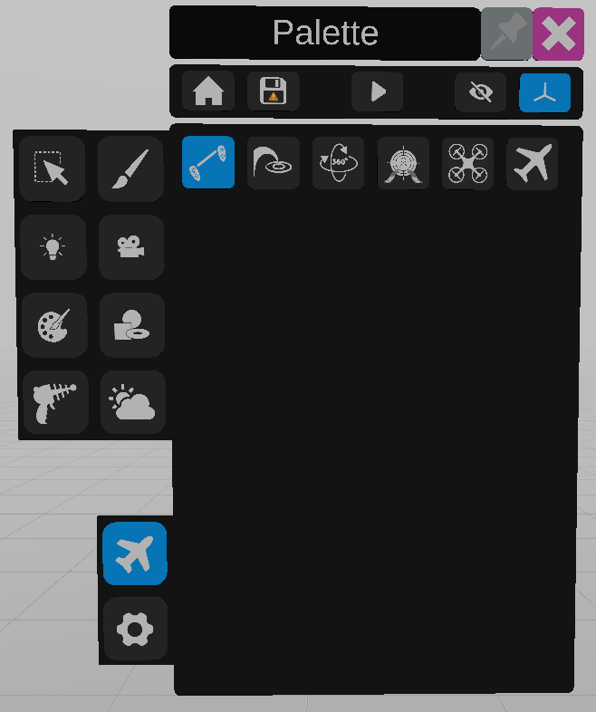
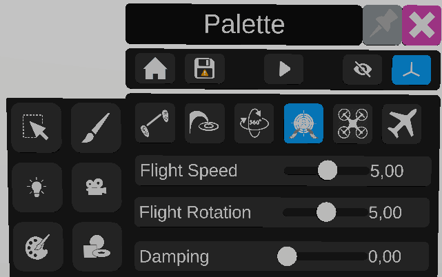

Movements
VRtist proposes multiple ways to move in the environment.
Default
The default movement system allows the user to move the world around him.
By gripping and moving the two controllers in the same direction, the world will be dragged in that direction.
By gripping and moving the two controllers around each other, the world will rotate around the user.
By gripping and moving the two controllers closer or apart from each other, the scale of the world will be reduced or increased.
The current scale of the world is displayed on the primary controller.
Teleport

The teleport system allows the user to teleport at a targeted spot using the primary controller.
Move the joystick up to show the teleport target and aim at the wanted position. Then rotate the joystick to move the arrow on the target and select the wanted direction.
Release the joystick to teleport.
You can also move the joystick left and right to rotate without moving.
Orbit

The orbit system allows the user to spin around an object.
Aim at an object in the scene, once the desired object is highlighted, press the grip, move the joystick to move around the object.
Use the options in the palette to change scale speed, move speed or orbit speed.
FPS
The fps system allows the user to move on an horizontal plane using both controllers’ joysticks.
Primary controller joystick to move forward, backwards and strafe left and right. Secondary controller to rotate.
Drone

The drone system allows the user to move like a drone, using both joysticks.
The primary controller joystick up and down axis moves the user up or down.
The primary controller joystick left and right axis rotates the user.
The secondary controller moves the user horizontally.
Free fly

The free fly navigation allows the user to move using the primary controller.
The joystick up and down axis moves the user forward and backward.
The joystick left and right axis and grip rotate the user.